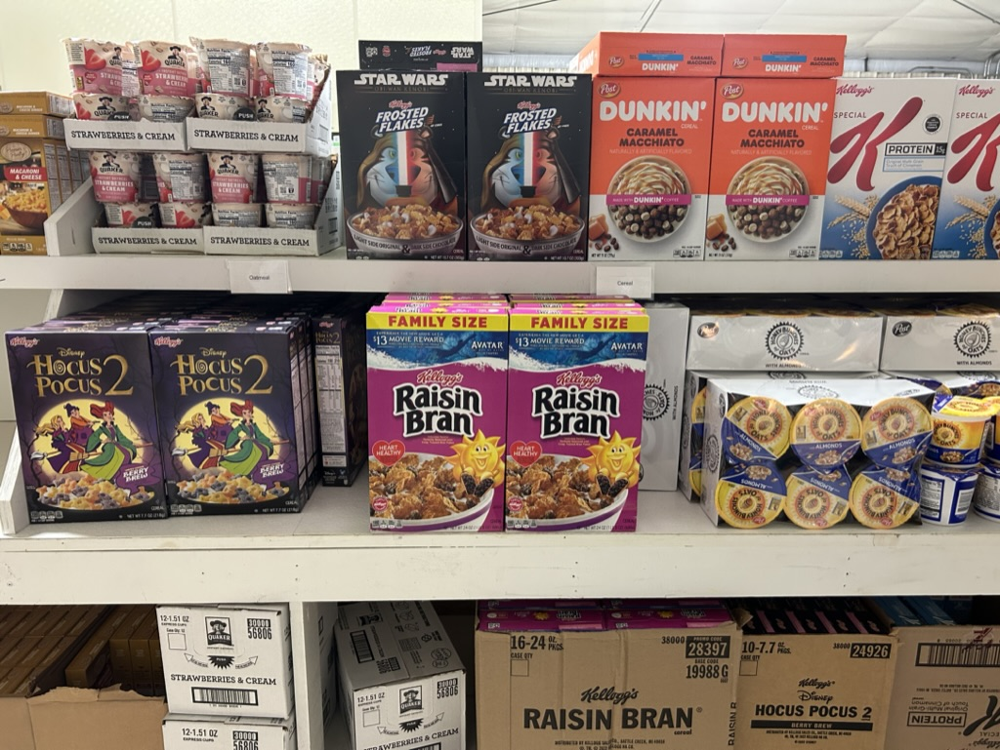
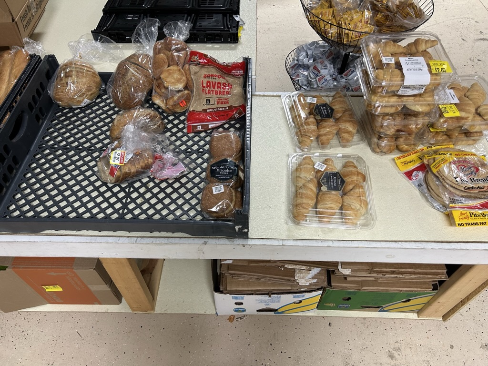
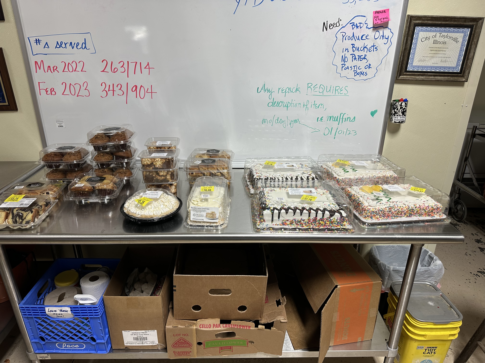
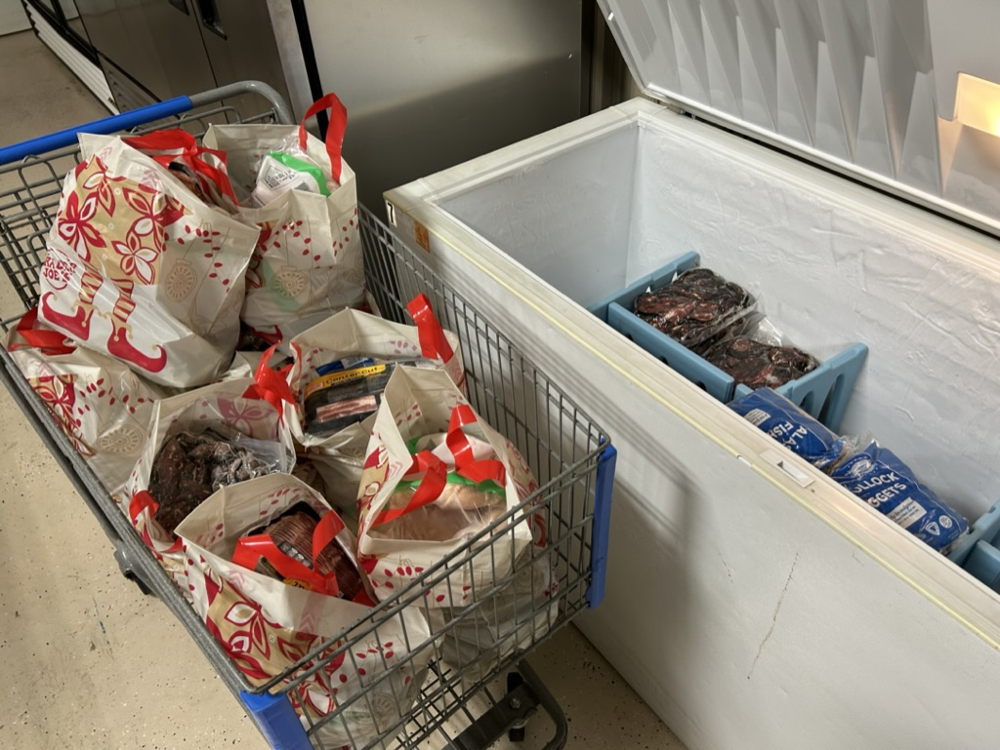
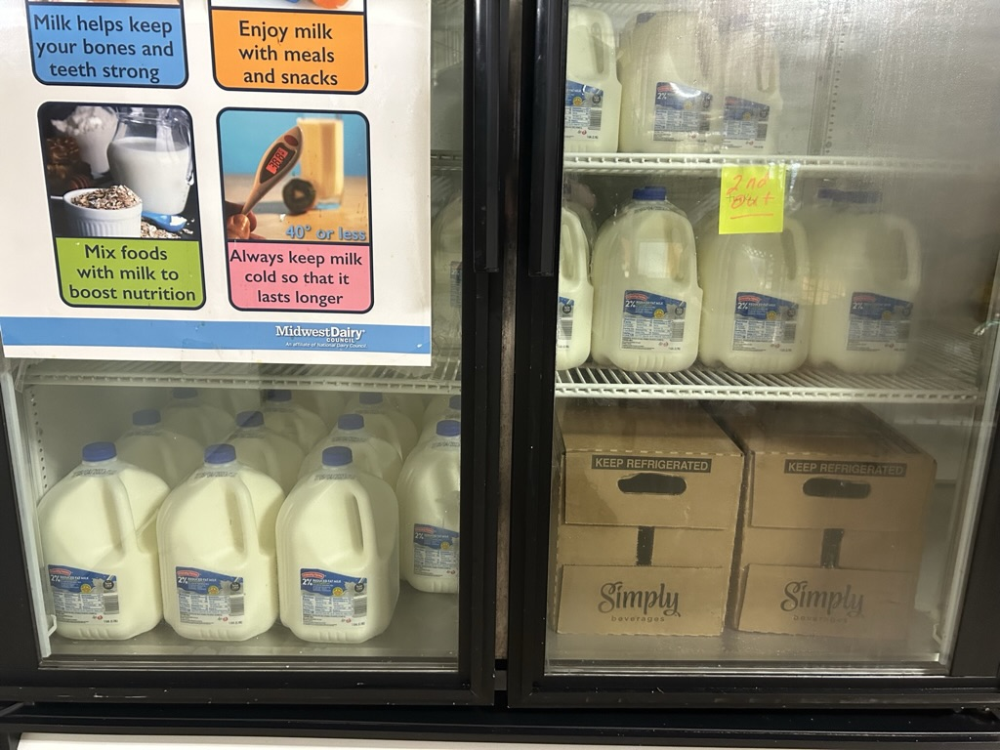
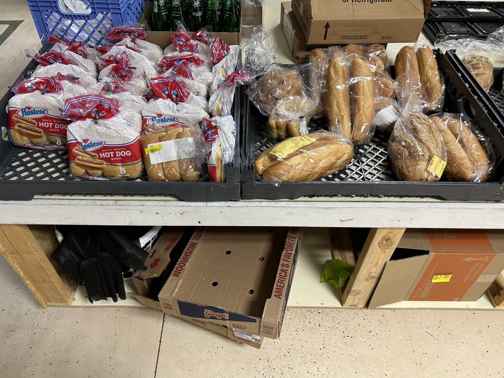
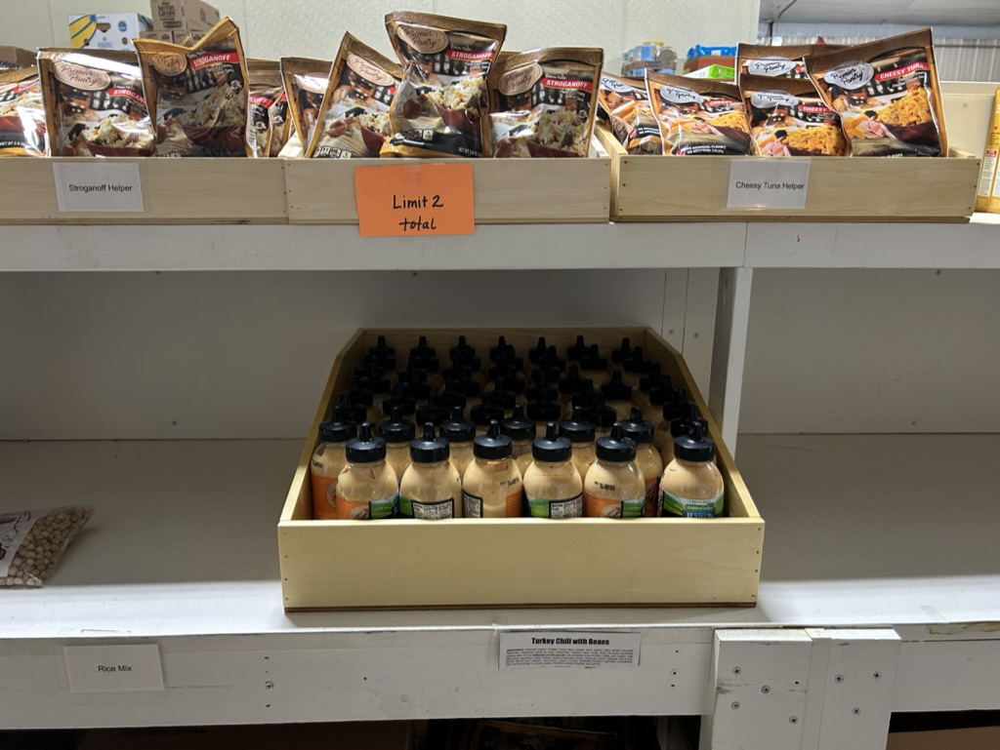
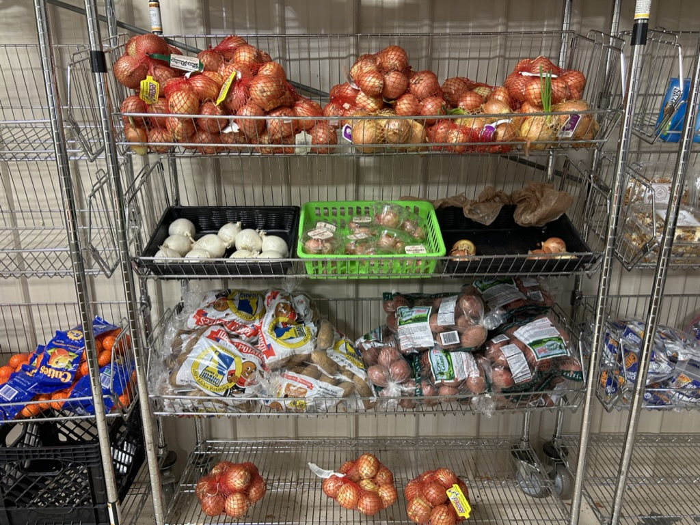
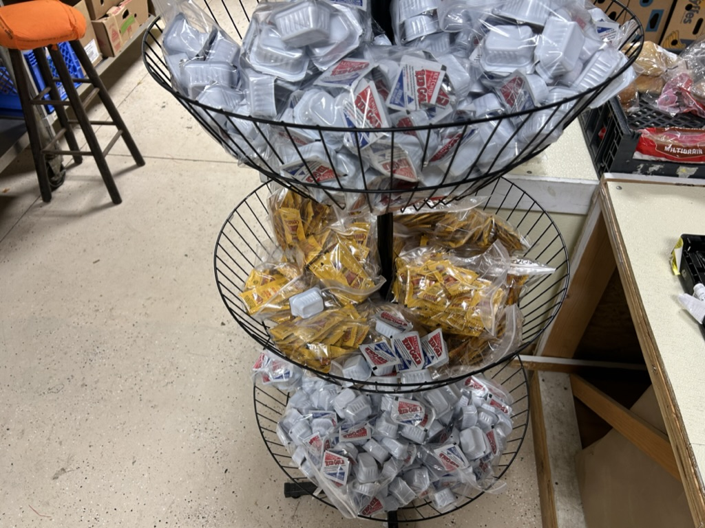
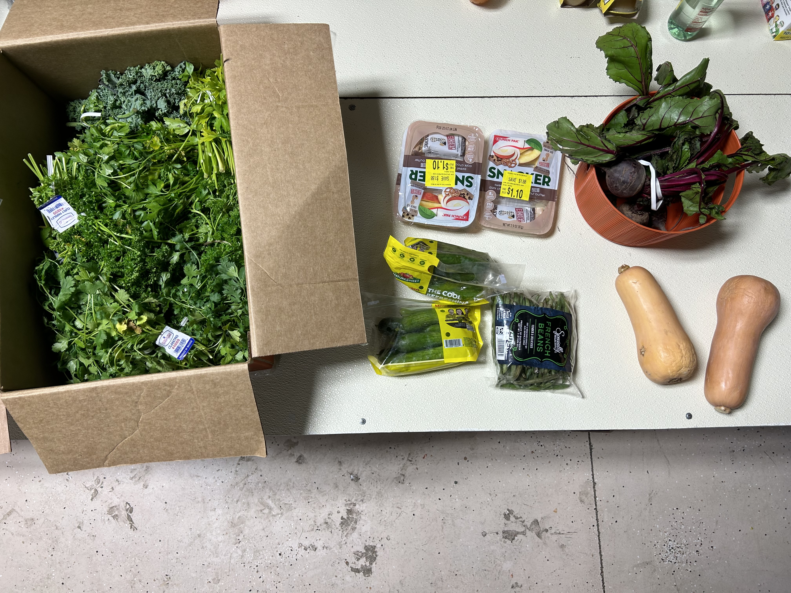

Taylorville Food Pantry
When it comes to our food pantry, we have plenty of heartful foods for you to choose from! Such as:
Boxed dinners like Hamburger Helper
Canned dinners like Spaghetti O’s
Canned fruit
Canned soup (tomato and chicken noodle)
Canned vegetables (corn, green beans, other) Cereal
Crackers
Jelly
Jiffy corn mix
Macaroni and cheese
Canned dinners like Spaghetti O’s
Canned fruit
Canned soup (tomato and chicken noodle)
Canned vegetables (corn, green beans, other) Cereal
Crackers
Jelly
Jiffy corn mix
Macaroni and cheese
Pasta Noodles
Pasta Sauce
Peanut butter
Pork and Beans
Pudding
Ramen Noodles
Rice
Snack items
Tuna
Garden vegetables and fruit
Pasta Sauce
Peanut butter
Pork and Beans
Pudding
Ramen Noodles
Rice
Snack items
Tuna
Garden vegetables and fruit
         
The vegetables we grow ourselves here at the pantry. We accept food donations as well.